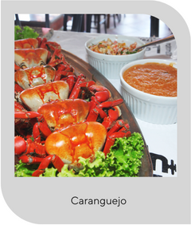
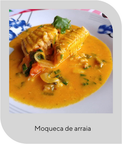
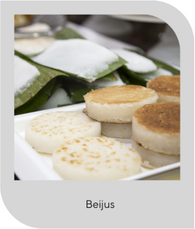

Comidas típicas aracajuanas
Por: Fulano Bla bla bla, ultima edição 23/09/2023
Aracaju, a bela capital sergipana, é um
verdadeiro tesouro gastronômico do Nordeste brasileiro. Entre suas
delícias típicas, destaca-se o caranguejo, servido em diversas
preparações e amplamente apreciado nos bares e restaurantes à beira-mar.
A moqueca de arraia, rica em sabores e temperos, é outro prato que
reflete a alma culinária da região, trazendo um gostinho especial do mar
para a mesa. E para finalizar com um toque adocicado, o beiju, uma
espécie de tapioca, se apresenta como a escolha perfeita, revelando a
diversidade e riqueza dos sabores aracajuanos.


